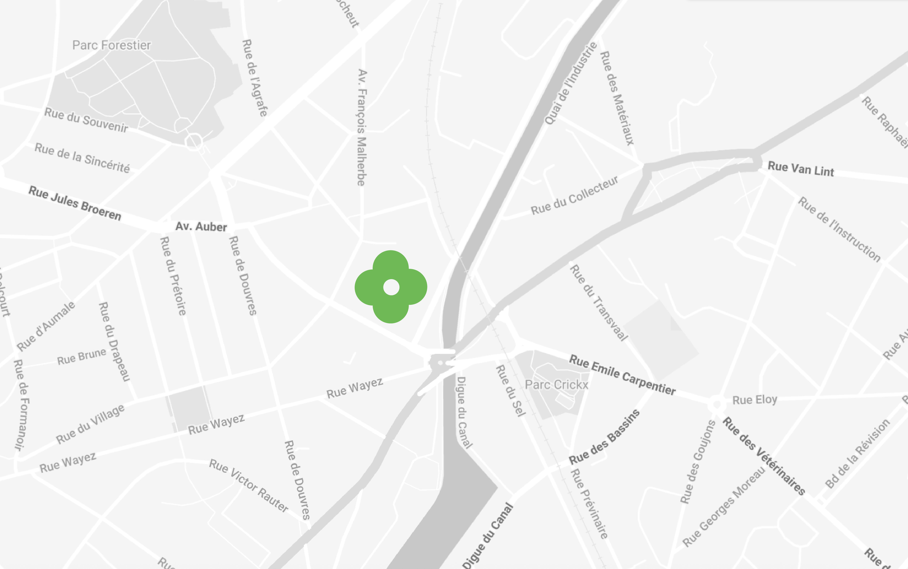
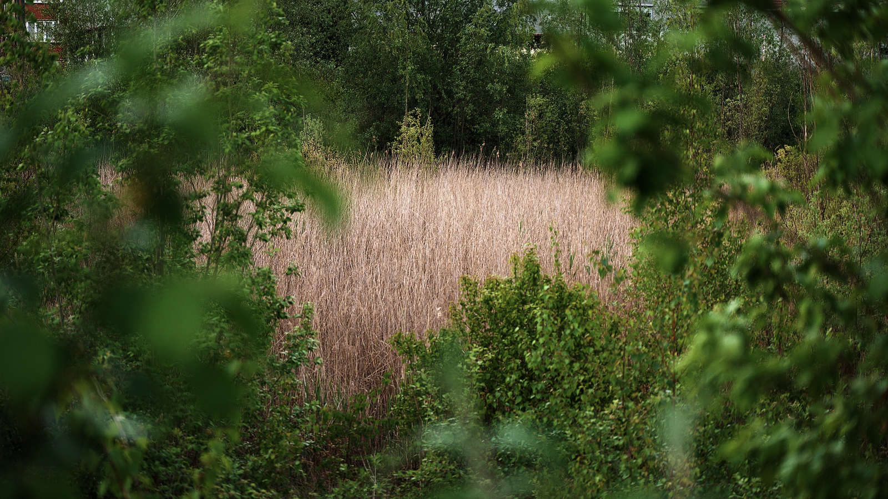

Marais de Biestebroeck, un
espace naturel,un patrimoine écologique précieux, en pleine ville.
Le marais régule les eaux, rafraîchit le quartier, et offre un espace de respiration unique dans une zone fortement urbanisée. Le préserver, c'est défendre un équilibre entre nature, logement et vie de quartier.

Promesse de logement
Le marais pourrait accueillir des logements accessibles et durables, pensés pour les habitant·e·s du quartier. Des logements sociaux et abordables, intégrés dans un cadre verdoyant, permettraient à chacun·e de vivre dignement sans être exclu·e par la spéculation immobilière. Construire au marais, oui — mais autrement : à échelle humaine, en respectant le lieu et ses habitants.
On densifie le quartier sans lui donnerde souffle.
À Anderlecht, plus de 120 000 habitants partagent seulement 12 crèches publiques et très peu d'espaces verts.
Sans espace vert
Chaque mètre carré bâti, c'est un peu d'air, de nature et de lien social en moins. Pourtant, les habitants ont montré leur attachement à ce lieu lors des activités de quartier, des balades, ou du mini-stade du FC Biestebroeck. Ne laissons pas disparaître ce poumon vert qui rend la ville plus respirable et plus humaine.


Partager sans exclure
Le quartier de Biestebroeck dispose d'un potentiel d'espaces ouverts pouvant être réinvestis au bénéfice de la collectivité. Le marais peut devenir un équipement public à part entière : un lieu de rencontre, de détente et d'activités extérieures.

Redonner du sens
La reconversion de certaines zones sous-utilisées, comme les parkings, représente une opportunité de revalorisation urbaine. Transformer ces surfaces minérales en terrains accessibles, comme un terrain de football de quartier ou un espace de loisirs, permettrait de redonner une fonction sociale à des espaces aujourd'hui inactifs..

Apprendre du marais
Le marais constitue également un support pédagogique exceptionnel. La mise en place de parcours d'interprétation ou de panneaux explicatifs sur la flore et la faune locales offrirait une dimension éducative au site.


Transformer sans effacer
L'ancien hôtel Honda présente un fort potentiel de reconversion. Plutôt que d'être démoli, il pourrait être transformé en centre d'accueil et d'activités lié au marais : un lieu d'information, d'exposition, de formation ou d'événements communautaires.
 
